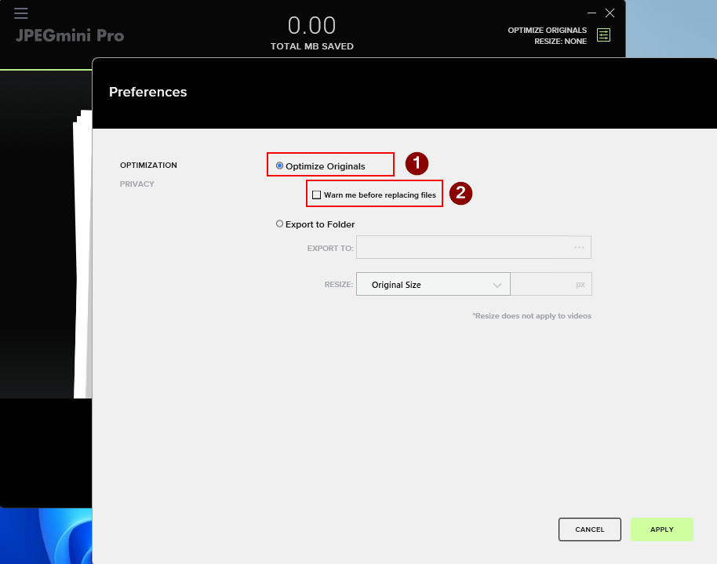
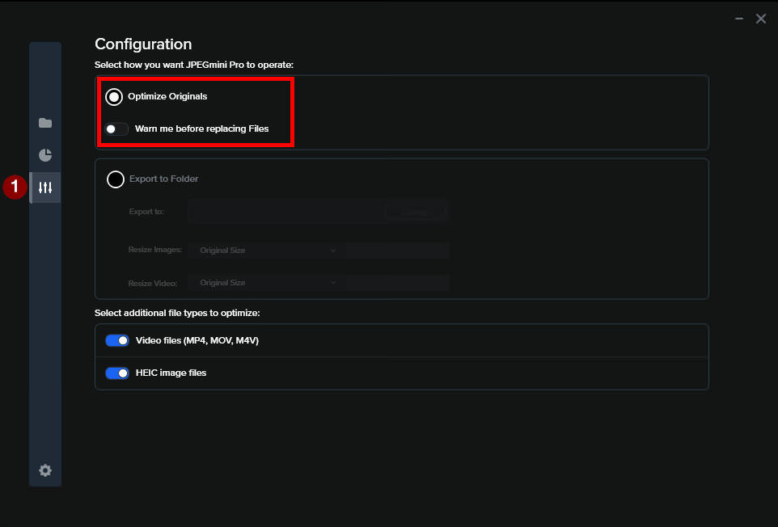

What is CBX Tools?
CBX Tools is a utility program designed to assist in converting and
optimizing common comic book file formats, including CBR, CBZ, and PDF. CBX Tools aims to preserve
image resolution and DPI settings as much as possible, ensuring virtually lossless conversion and
optimization for high-quality results.
CBX Tools offers three main functions:
- CBR/CBZ Optimization – Optimizes CBR and CBZ comic book files by converting
them into RAR files with recovery records. Optionally, it enhances JPEG images using the
included jpegoptim or external JPEGMini Pro. The final file is saved with a CBR extension.
- CBR/CBZ to PDF Conversion – Converts CBR and CBZ files into PDF format.
- PDF to CBR/CBZ Conversion – Converts PDF files into CBR format.
Requirements
CBX Tools uses WinRAR for
extracting and compressing CBR/CBZ files, as it is the fastest
application for ZIP extraction and RAR operations. Thererfore, WinRAR must be installed on the
computer. Since it is not free software, it cannot be bundled with CBX Tools.
Optional Requirements
CBX Tools can utilize JPEGMini
Pro for JPEG optimizations, significantly reducing the size of JPEG files while
preserving their resolution and image quality. JPEGMini Pro must be
installed separately, as it is not free software and cannot be included with CBX Tools.
User Interface
1. Drag-and-
Drop Areas (1, 2, and 3)
These are the primary zones where users can drag and drop files, folders or both for processing.
Each drop area corresponds to a specific function:
- Area 1: Designed for CBR/CBZ Optimization tasks, enabling
users to optimize comic book files for better storage efficiency and resiliency without
compromising quality.
- Area 2: Used for converting PDF to CBR, allowing seamless
conversion of PDF files into comic book formats.
- Area 3: Handles CBR/CBZ to PDF conversions, enabling users
to turn comic book files into standard PDF documents.
2. Information Area (4)
This large black panel is a dynamic display section that provides detailed logs, feedback, and
status updates related to the current batch. It keeps users informed about the process in
real-time, ensuring transparency and clarity.
3. Current Step Area (5)
This area displays the current step or phase of the operation in progress. It helps users keep
track of where the process stands, ensuring they are always aware of what the program is doing.
4. Progress Bar Area (6)
A dedicated section to visually indicate the progress of the ongoing task. The progress bar
provides an intuitive representation of how much of the operation has been completed.
With its clearly marked and organized sections, CBX Tools ensures that users can
efficiently manage, optimize, and convert their comic book files with ease.
Operations
1. CBR and CBZ Optimizations
All CBR and CBZ files within the files and/or folders dropped into this box undergo a series of
operations to enhance efficiency and reliability. Other file formats will be ignored. First, the
files are extracted using WinRAR.
If JPEG Optimization is enabled in the Settings menu, all JPEG files are optimized to save
storage space while preserving resolution and DPI values, using the selected method. For
optimization with JPEGMini Pro, the program must be installed and configured as outlined in the
Optional section, whereas jpegoptim requires no additional setup. JPEGMini Pro removes
unnecessary
image information, such as details and color data that are less perceptible to the human eye,
achieving up to 50% space savings on some files while maintaining high visual quality. if
selected, jpegoptim operates in a similar manner, although the space savings it achieves are
typically smaller. This free tool is fully integrated with CBX Tools. Finally, the
optimized images and any auxiliary files with an XML extension are recompiled into a CBR file
using WinRAR, incorporating a recovery record as specified in the Settings menu. This recovery
record is a critical feature that helps restore data if the archive becomes corrupted, allowing
missing or damaged information to be repaired, even if part of the CBR file is compromised.
2. PDF to CBR Conversion
When converting PDF files to CBR, you can drop files, folders or a combination of files and
folders into
this box. Only PDF files will be processed; other file formats will be ignored. Based on the
content of each PDF file, the most suitable method is used to extract the pages as images. File
formats like JPX, PBM, PGM, and PPM are converted into JPEG format, while PNG and BMP files
remain unchanged. If JPEG Optimization is enabled in the Settings menu, all JPEG files are
optimized using the selected method to save storage space while preserving their resolution and
DPI. Finally, the optimized image files are converted into a CBR file with a recovery record, as
specified in the Settings menu, using WinRAR.
3. CBR/CBZ to PDF Conversion
When converting CBR/CBZ files to PDFs, you can drop files, folders or a combination of files and
folders
into this box. Only CBR and CBZ files will be processed; all other file formats will be ignored.
The selected CBR and CBZ files are first extracted using WinRAR. If JPEG Optimization is enabled
in the Settings menu, all JPEG files are optimized using the chosen method to reduce their size
while keeping the resolution and DPI intact. Finally, the optimized image files are converted
into a PDF.
Optional: How to Configure JPEGMini Pro
If you own a JPEGMini Pro license and would like to use it with CBX Tools for JPEG optimization,
you need to ensure that the program is configured as shown in the pictures below. CBX Tools has
been tested with JPEGMini Pro versions 3.3 and 4.1.3.
Optimize Orginals - SELECTED
Warn me before replacing files - NOT SELECTED
JPEGMini Pro 3.x

JPEGMini Pro 4.x
